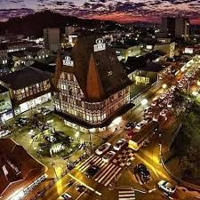
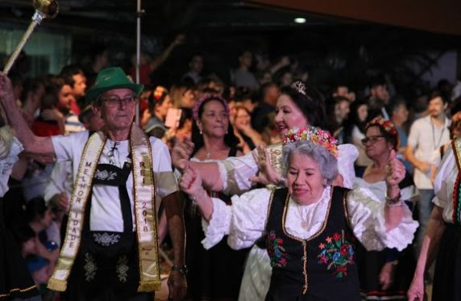
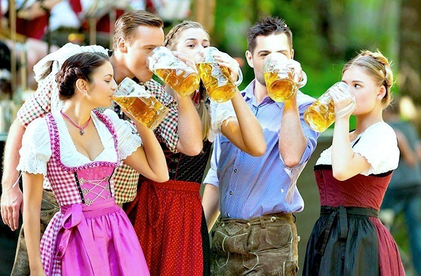

Festa típica alemã Oktoberfest de Blumenau
A Oktoberfest Blumenau já conquistou o coração dos brasileiros e estrangeiros apaixonados por cerveja e pela cultura alemã. Estamos falando de um festival grande, com bastante música, dança, comidas e bebidas típicas, cores e muita alegria de um povo orgulhoso de sua tradição. Essa é a Oktoberfest Blumenau, que está em sua 36° edição e acontecerá de 9 a 27 de outubro de 2019. Inspirada na festa de Munique, é considerada a maior comemoração alemã realizada no Brasil. O evento recebe muitos descendentes de alemães, turistas e moradores que se vestem a caráter para celebrar. Não precisa ser alemão para se divertir, todos são acolhidos com carinho e respeito. A única regra é estar bem animado!
Prefeitura de Blumenau - Praça Victor Konder, 2 - Centro - CEP 89010-904 - Blumenau - SC - Brasil Horário de atendimento da Prefeitura: 8h às 12h e das 13h30 às 17h30 Horário de atendimento da Praça do Cidadão: 8h às 17h Telefone: (47) 3381-6000
Aprecie toda essa emoção aqui
Saiba mais pelo vídeo abaixo:
A Oktoberfest de Blumenau é um festival de tradições germânicas que ocorre na cidade de Blumenau em Santa Catarina durante o mês de outubro. Ela é uma das celebrações que surgiram no mundo similares à Oktoberfest de Munique, na Alemanha.
A Oktoberfest de Blumenau foi criada em 1984, depois da cidade ter sofrido uma forte enchente do Rio Itajaí-Açu que corta a cidade, com o objetivo de recuperar a economia e levantar a moral dos habitantes da cidade. Antes, mesmo disso, já era pretendida por empresários da indústria e comércio da cidade a criação desta festa nos moldes da de Munique, mas a enchente foi um fato marcante para o seu início efetivo. Desde a primeira edição foi um sucesso, mantendo-se até hoje com um público médio de 700 mil por ano. Durante o evento acontecem os desfiles de danças típicas (Tanzgruppen), grupos de tiro (Schützenvereine), canto, trajes típicos e culinária alemã. O Fritz e a Frida são os personagens típicos do alemão e da alemã. A Vovó Chopão e o Vovô Chopão são personagens símbolos oficiais da festa.
Está pronto para embarcar em uma viagem gastronômica que te levará diretamente para a Alemanha? Além da variedade de chopes, música e animação, a Oktoberfest Blumenau é conhecida pela sua qualidade e diversidade na gastronomia, que (cá entre nós) é deliciosa! A festa conta com seis restaurantes, uma praça de alimentação e vários pontos gastronômicos espalhados pelo Parque Vila Germânica. São mais de 150 itens do melhor da cozinha típica germânica que podem ser harmonizados com chopes e cervejas artesanais. Quero mostrar pra vocês os principais deles, e vou começar pelos tradicionais e famosos sabores da Festa! Todo mundo vem para Blumenau querendo experimentar pratos como Joelho de Porco (Eisbein) e Marreco Recheado (Gefüllte Ente). Estes são sabores bem típicos da gastronomia germânica, mas aqui em Blumenau você encontrará muito mais. Pratos compostos de Salsichas (vermelha e branca), purê de batata e chucrute são bem comuns nos restaurantes da Oktober. Parece estranho, mas a combinação é sensacional! Para quem não sabe, o chucrute (Sauerkraut) é tradicionalmente uma conserva de repolho fermentado. Pode ser feito também com folhas de repolho firmes e com outros vegetais em conjunto. É delicioso, experimente! Costumamos incluir também no cachorro-quente. Falando em cachorro-quente, aqui em Blumenau temos o Wurst Dog, feito com salsicha especial e molhos artesanais. Fora da Vila Germânica, lançaram uma edição especial do Wurst no The Boiler Gastro Pub. Eu experimentei e é sensacional! Outro lanche bastante popular por aqui é a Batata Recheada. Existe a tradicional (com requeijão e bacon), e uma infinidades de sabores, até vegetariana de brócolis. Quem estiver por aqui, precisa provar a deliciosa do Alemão Batata. Não tem merchandising, essa é a opinião de uma blumenauense nata que ama essa batata desde criança. Aqui, os deliciosos e populares hambúrgueres artesanais, tem uma peculiaridade: a carne é de pato! Estranho, não, delicioso!! As carnes de pato são mais escuras que de frango, e mais fortes. Além dos lanches, você encontra tulipas de pato e cones recheados com pedacinhos tostados da carne ou torresmo. Outras guloseimas, quase sempre gordas, estão espalhadas pelos restaurantes da Vila Germânica, como nosso delicioso aipim enrolado com bacon, bolinhos, pastéis, etc. Vocês já ouviram falar no tal do Espetinho Alemão? Sim, ele existe! É um espeto de salsicha ou carne da sua preferência, envolvido por pão. Aqui temos também o Pão com Bolinho, que é este lanche da foto abaixo. Alguns restaurantes da cidade oferecem variedades dele durante o ano todo. Uma novidade até para mim é a pizza alemã! Essa vou conhecer este ano na festa. Nos stories eu conto se aprovei. A minha MAIOR PAIXÃO na gastronomia alemã é o SPAETZLE. É uma massinha parecida com macarrão, mas feita basicamente de ovos. É comumente servida com goulash (gulache, gulasch ou gulyás), um prato de carne de vaca picada, que por vezes se adiciona carne de porco, cortada em cubos e rapidamente posto em gordura quente, juntando então farinha, cebola e especiarias, sendo depois o conjunto cozido em água. Este ano, uma das super novidades é a criação de Wraps, rolinhos de massa síria com diversos recheios, inclusive uma opção vegana. Experimentei na festa de lançamento, é maravilhosooo! O Bretzel é um tipo de pão muito popular na Alemanha. Em forma de nó, é seco, habitualmente assado, podendo ser doce ou salgado. Na foto acima, você vê os formatos doces, envolvidos vom chocolate, açúcar e canela. Abaixo, você tem a opção salgada, com molhinhos especiais. Um doce muito popular por aqui é a famosa Cuca! Não sei nem explicar, porque pra mim é tão Cuca! Mas basicamente é uma massa doce 1ue pode ser recheada com farofa, nata, frutas e outras delícias. Além das Cucas, na festa e na cidade toda você encontra tortas deliciosas, como a torta de maçã. Se puder passar em um Café Colonial, eu recomendo!
Gustavo da Costa de Castro - SENAI